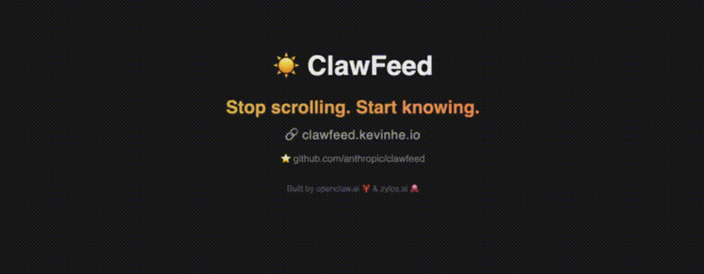
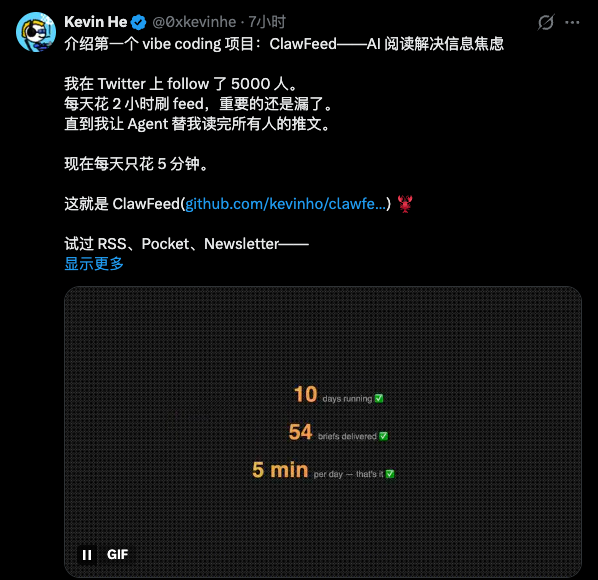
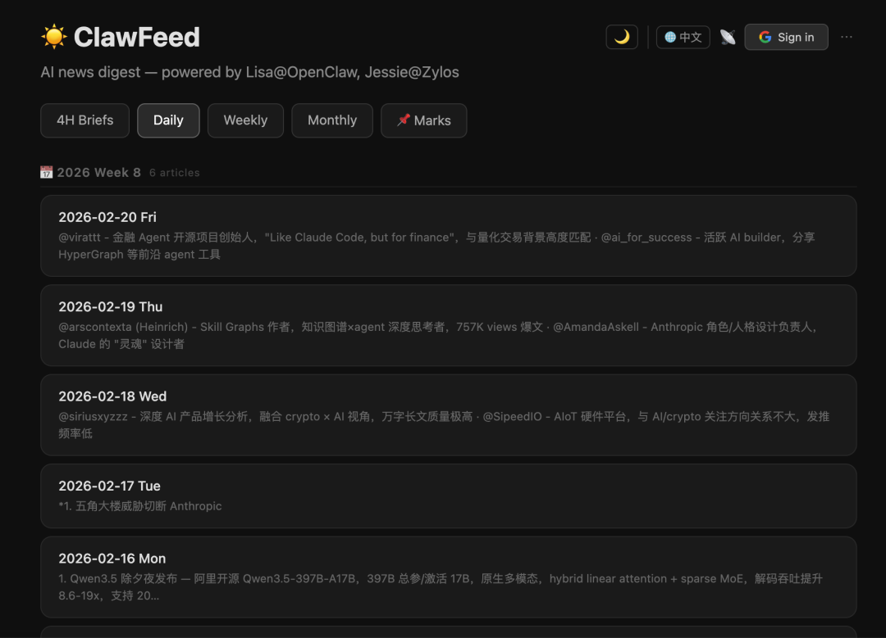

现在每天获取信息的途径就是刷各种推文。Twitter、RSS、HackerNews、Reddit、GitHub 各个平台来回切换，生怕错过什么重要信息。
结果刷了一两个小时，真正有用的没记住几个，时间倒是全耗进去了。
这种信息过载的焦虑，估计很多人都有同感。一方面想保持对行业动态的敏感度，另一方面又实在没有精力每天泡在各种信息流里。
更糟的是，现在的算法推荐越来越“聪明”，你点过什么，它就玩命给你推什么，结果视野越来越窄，还浪费了大量时间。
但是昨天我发现了一个开源项目：ClawFeed，可以帮助我们解决这个问题。

一个 AI 驱动的新闻摘要工具。它的理念很简单：把成千上万的信息源聚合起来，用 AI 筛选出真正重要的内容，让你“停止无意义的刷信息流，开始真正获取知识”。
项目简介
ClawFeed 是由 Kevin He 开发的一个开源 AI 新闻摘要工具。它的口号是 "Stop scrolling. Start knowing."（停止刷，开始了解）。

它的名字很有意思——"Claw" 意为"爪子"，就像一只敏捷的爪子，帮你从信息的海洋中精准抓取真正重要的内容。
它解决的核心问题就是信息过载。现在的信息源太多了：
• Twitter/X 上有各种大佬的动态； • RSS 里订阅了几十个博客； • HackerNews 上有最新的技术趋势； • Reddit 上有各种社区讨论； • GitHub Trending 上有热门开源项目。
想全部看完根本不可能，但只看其中一个又怕错过重要内容。
ClawFeed 的思路很直接：把所有这些信息源都聚合起来，然后用 AI 进行筛选、摘要，最后给你一份结构化的摘要报告。
你可以选择 4 小时、每日、每周、每月等不同频率的摘要，根据自己的需求来。
而且它不仅可以独立使用，还可以作为 OpenClaw 或 Zylos 的技能来运行，集成到更大的 AI 代理系统中。
核心亮点
1、多频率摘要
ClawFeed 提供了四种不同频率的摘要选项：4 小时、每日、每周、每月。
这样你可以根据自己的时间安排和信息需求来选择：
• 4 小时摘要：适合需要实时追踪行业动态的人，比如做投资、做媒体的 • 每日摘要：大多数人的选择，每天早上花 10 分钟就能了解前一天的重要信息 • 每周/每月摘要：适合时间比较紧张，或者想做周期性回顾的人
2、多源聚合
支持的信息源非常丰富：
• Twitter/X：可以关注用户，也可以关注列表 • RSS/Atom：任何 RSS 源都可以添加 • HackerNews：首页、热门等 • Reddit：可以订阅任意子版块 • GitHub Trending：可以按语言筛选 • 网站抓取：直接输入网址就能抓取内容 • 自定义 API：支持接入自定义数据源 • 其他用户的摘要：甚至可以订阅别人的 ClawFeed 摘要
基本上你能想到的信息源，它都支持了。
3、Source Packs
这是一个很有意思的功能。你可以把自己精心挑选的一组信息源打包成一个 "Source Pack"，分享给社区。
其他人可以一键安装你分享的 Source Pack，直接订阅你推荐的所有信息源。
这对于建立垂直领域的信息源特别有用。比如做 AI 的，可以分享一个“AI 大佬信息源包”；做前端的，可以分享一个“前端技术精选包”。
大家互相分享，就能快速建立起高质量的信息网络。
4、Mark & Deep Dive
看到感兴趣的内容，可以标记下来，然后让 AI 进行深度分析。
这样遇到重要的新闻或文章，不仅能看到摘要，还能让 AI 帮你深入挖掘背后的信息、分析趋势、联系相关内容。
5、智能筛选
ClawFeed 提供了可配置的内容过滤规则，可以自定义哪些内容是你感兴趣的，哪些是噪音。
它还会根据你 feed 的质量分析，给你推荐应该关注或取消关注的内容源，帮你持续优化信息质量。
功能特性
• Google OAuth：支持多用户访问个人书签和来源 • Feed 输出：任何人都可以通过 RSS 或 JSON Feed 订阅你的 ClawFeed 摘要。 • 多语言：支持英文和中文界面，对国内用户很友好。 • 深色/浅色模式：支持主题切换，用 localStorage 持久化保存你的偏好。 • Web 仪表盘：有一个单页应用的 Web 界面，可以浏览和管理你的摘要。 • SQLite 存储：使用 SQLite 作为数据库，快速、便携、零配置，不需要额外安装数据库服务。
快速入手
首先，如果你想先体验一下，可以直接访问在线演示，有现成的 AI 信息源可使用。
在线体验：https://clawfeed.kevinhe.io

当然 ClawFeed 也有多种安装方式，大家可以根据自己的情况选择。
方式一：ClawHub（推荐）
如果你在用 ClawHub，这是最简单的方式：
clawhub install clawfeed方式二：OpenClaw Skill
如果你在用 OpenClaw：
cd ~/.openclaw/skills/
git clone https://github.com/kevinho/clawfeed.gitOpenClaw 会自动检测到 SKILL.md 并加载这个技能。然后代理就可以通过 cron 生成摘要、提供仪表盘、处理书签命令了。
方式三：Zylos Skill
如果你在用 Zylos：
cd ~/.zylos/skills/
git clone https://github.com/kevinho/clawfeed.git方式四：独立部署
如果你想独立运行：
git clone https://github.com/kevinho/clawfeed.git
cd clawfeed
npm install配置说明
① 复制并编辑环境配置：
cp .env.example .env然后编辑 .env 文件，配置你的设置。
主要的环境变量：
* 认证功能必需。如果不配置 OAuth，应用会以只读模式运行。
② 启动服务
配置好后，启动 API 服务器：
npm startAPI 会在 http://127.0.0.1:8767 上运行。
开发模式
如果你想在开发时使用自动重载：
npm run dev认证设置（可选）
如果你想启用 Google OAuth 登录：
1. 去 Google Cloud Console 2. 创建新项目或选择现有项目 3. 启用 Google+ API 4. 创建 OAuth 2.0 凭证 5. 将你的域名添加到授权来源 6. 添加回调 URL： https://yourdomain.com/api/auth/callback7. 在 .env中设置凭证
自定义配置
你还可以自定义一些内容：
• 筛选规则：编辑 templates/curation-rules.md来控制内容过滤• 摘要格式：编辑 templates/digest-prompt.md来自定义 AI 输出格式
API 接口
ClawFeed 提供了完整的 REST API，所有接口都以 /api/ 为前缀。
摘要接口
认证接口
书签接口
信息源接口
Source Packs 接口
Feed 接口
写在最后
ClawFeed 这个项目完美击中了现代人的痛点：信息过载。但信息过载不是技术问题，而是注意力管理的问题。
它的价值在于，它帮我们建立了一道"信息防火墙"，让我们从被动的信息接收者，变成主动的信息筛选者。
正如它的 slogan 所说："停止无意义的刷信息流，开始真正获取知识。"
它不是简单地把信息推给你，而是帮你筛选、摘要，让你只看真正重要的内容。
如果你也厌倦了无意义的刷信息流，想把时间花在真正获取知识上，不妨试试 ClawFeed。它可能会改变你获取信息的方式。
GitHub：
https://github.com/kevinho/clawfeed
如果本文对您有帮助，也请帮忙点个 赞👍 + 在看 哈！❤️